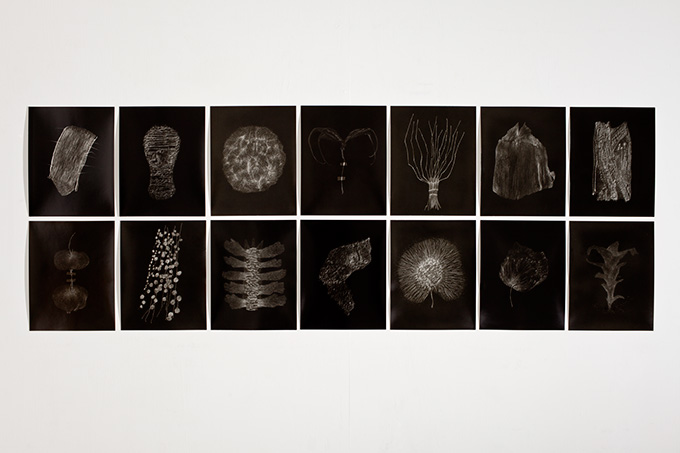
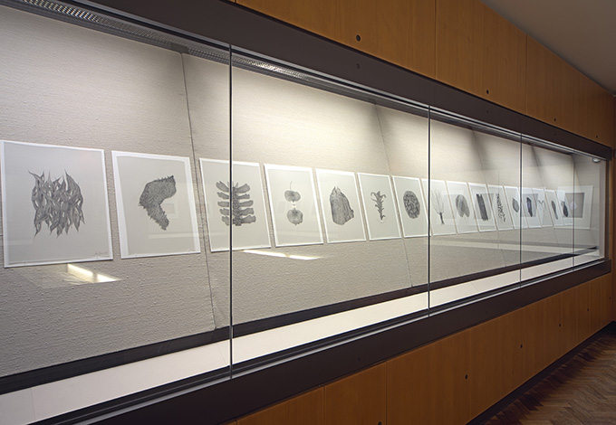
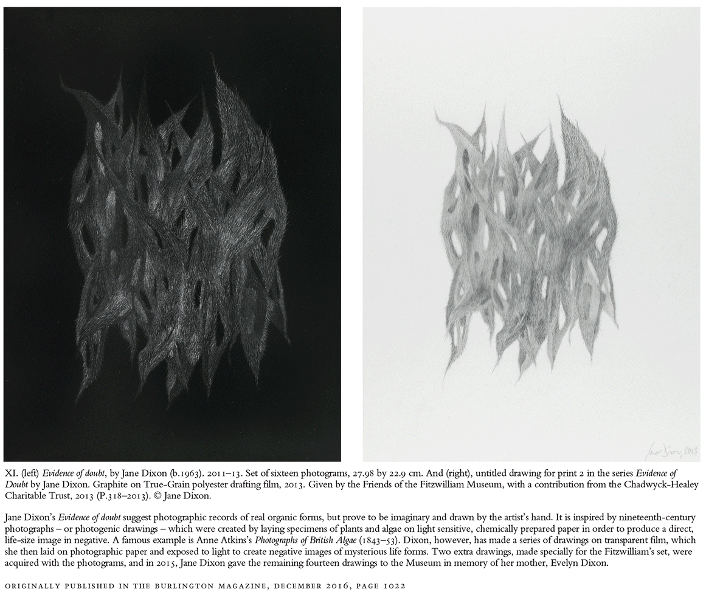
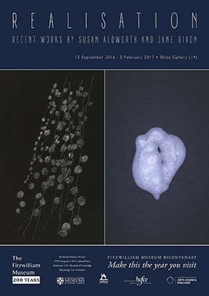

home
Re-Natured 2019 -2020
Model Series 2011 - 2014
Evidence of Doubt 2011 - 2013
Regeneration 2006 - 2010
Under False Colours 2004
Works 1996 - 2000
contact
biography
Evidence of Doubt, 2011
 14 photograms, each sheet 11 x 9 inches. For many years one of the primary concerns in my work has been the ambiguity of perception and a borderline state between artificiality and fact. In 2001 I curated an exhibition for Kettle's Yard, Cambridge at the end of my tenure as Artist Fellow, it was titled Solid State: reflections upon the real. The show posed questions about the physical and temporal nature of actuality and what it means for something to be 'real'. It presented both historical and contemporary artworks in various media, including works by Anna Atkins, Naum Gabo and Cornelia Parker and also some scientific images such as CT scans and False Colour infra-red photography. In my own work there has always been a strong conceptual alignment between subject and method in which the materials and construction are as much a part of the meaning of the work as is the image. The work is often a hybrid, combining methodological elements of print, painting and drawing, almost always with photography as a source. The Photogram / Cyanotype as a process implies through its directness a quantifiable record of an object's exact scale, solidity and presence. It is an empirical record of the real (as opposed to other forms of photography where the procedures allow for a faithful copy of the object in front of the lens but also the potential for deception). Drawing on the other hand, whilst implying a record of fact (in forms such as botanical illustration) can equally be a means of pure invention. In Evidence of Doubt, the nature of the images produced implies a reference to real specimens (as seen in Anna Atkins' book "Photographs of British Algae" 1843-'53) but they are all imaginary constructions, not existing in the natural world. By the manipulation of the Photogram process I aim to construct an object which by its intrinsic nature calls into question the truth of what we are seeing and makes contemporary visual reference to Atkins' exquisite historical document. Drawings for Evidence of Doubt, installed as part of Realisation.
The layout below is taken from an article by Tim Knox, Director of The Fitzwilliam Museum. 
 Exhibition poster
|